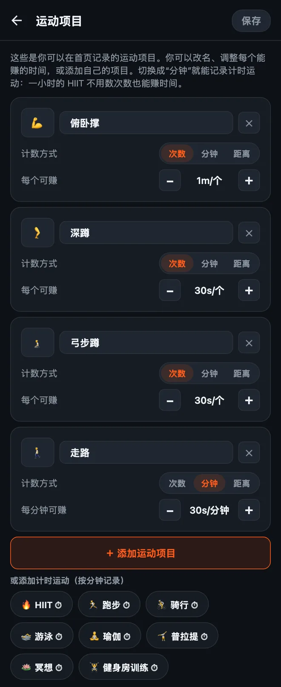

HonorFit 怎么自定义运动项目
嗨大家好！HonorFit 一开始是我做给自己用的俯卧撑 App 屏蔽工具（英文）：Instagram 会一直锁着，直到我做完一些俯卧撑，而且是用诚信制（英文）自己记录（不用摄像头）。内置有四种运动：俯卧撑、仰卧起坐、引体向上和深蹲。
不过不是每个人都想做俯卧撑。也许你的手腕很讨厌它，也许你比较想做波比跳，也许你今天已经跑了 8 公里，想让这个也算数。很合理！所以这些全部都可以改。下面是详细的做法，还有哪些免费、哪些需要 Pro。
哪些免费、哪些是 Pro
先说好消息：从 1.15.0 版开始，这篇文章里讲的几乎都免费了。HonorFit 内置四种运动，数值如下：
| 运动项目 | 每个可赚（默认） |
|---|---|
| 💪 俯卧撑 | 1 分钟 |
| 🔥 仰卧起坐 | 30 秒 |
| 🧗 引体向上 | 1 分 30 秒 |
| 🦵 深蹲 | 30 秒 |
免费版就可以帮运动项目改名、调整顺序和删除，调整每一个能赚多少时间，用分钟记录计时运动、用公里或英里记录距离运动，还能添加最多 3 个自己的运动。滚轮一组最多 100 个，一次最多可以存 2 小时。屏蔽、记录和统计永远免费。
Pro 是每月 3 美元，或一次买断 19.99 美元（这是美国的价格，各国价格和币种不同，商店会以你当地的货币显示）。运动项目方面，它让你想加几个自己的运动就加几个。另外它还会去掉存时间 2 小时的上限，并加上保存的组合、暂停模式、赊账模式，以及每月和每年的记录。
1. 打开运动项目编辑界面
- 在首页点右上角的齿轮，打开“设置”。
- 点最上面的运动项目卡片。
每个运动项目都有一张卡片。在这里改的东西，要等你点右上角的保存才会生效，所以尽管随便点点看。没保存就离开的话，什么都不会变。

2. 帮运动项目改名或换表情符号
点一下名称，想打什么就打什么。如果你实际做的是跪姿或扶墙的版本，“俯卧撑”可以改成“跪姿俯卧撑”或“扶墙俯卧撑”。要换图标的话，点左边的表情符号方块，从清单里挑一个（大概有 40 个跟健身有关的）。
小提醒：内置的运动名称会跟着 App 的语言，所以手机设成英文的话，“深蹲”就会显示成英文。一旦你改了名，就会照你打的字显示。
3. 设置每一个能赚多少屏幕使用时间
每个运动项目下面都有每个可赚，旁边有 − 和 + 按钮。每点一下会增减 5 秒，最低到 5 秒。所以你可以让波比跳一下值 1 分 30 秒、开合跳一下值 10 秒，你觉得公平就好。
你也可以不打开编辑界面，只改数值：“设置”里运动项目卡片正下方有一个每个的价值区块，有一样的 −/+ 按钮。
4. 添加运动项目
有两种方式：
- 点“＋ 添加运动项目”。会多一张叫“新运动项目”的卡片，每一个 30 秒。帮它改名、设置数值就好。
- 点建议项目。按钮下面有一排常见的运动，点一下就能加入：波比跳、弓步蹲、开合跳、平板支撑、登山跑、臂屈伸、跳绳、高抬腿、二头弯举、壶铃摆荡、靠墙蹲、俄罗斯转体、臀桥和凯格尔运动。这些一样从每一个 30 秒开始。加入之后，它就会从推荐列表里消失。
免费版同时最多可以有 3 个自己的运动（改过名字的内置运动不算在内）。Pro 则没有上限。
每个运动项目在首页都会有自己的滚轮，所以我建议维持在四个左右。再多的话，你就得翻来翻去找你要的那个。
5. 记录计时运动（用分钟，不用次数）
这是我最常被问到的。有些运动本来就不是用次数算的：散步、一堂瑜伽课、跑步、在健身房待一小时。每张卡片都有一个计算方式：次数 | 分钟 | 距离的切换。切到分钟，那个滚轮就会改成算分钟，数值也会变成每分钟可赚。
也有点一下就能加入的计时建议（会有 ⏱ 标示）：HIIT、跑步、骑车、游泳、瑜伽、普拉提、冥想、健身房和走路。
新的计时运动从每分钟 30 秒开始，所以做一小时 HIIT 可以赚到 30 分钟的 App 时间。注意一下：当你把运动项目在次数和分钟之间切换时，数值会重设成 30 秒，因为“每个 1 分钟”和“每分钟 1 分钟”差很多。切换之后再重新设置一次就好。
滚轮是以整分钟计算，所以 30 秒的平板支撑不太适合用分钟。像这种撑住不动的运动，我会建议维持在次数，自己决定一下代表什么（例如撑 20 秒算一下）。
6. 记录距离运动（公里或英里）
1.17.0 新功能：如果你想用公里而不是分钟来算跑步，就把切换改成距离。会多出一个单位切换（公里 | 英里），数值也会变成每公里可赚或每英里可赚。在美国和英国默认是英里，其他地方默认是公里。
距离建议会有 📏 标示：走路、跑步、冲刺跑、徒步、骑车、游泳和划船。新的距离运动从每公里 5 分钟 App 时间开始（每英里 8 分钟），所以跑 5 公里可以赚到 25 分钟。把运动项目切到距离时，数值一样会重设成这个默认值；但在公里和英里之间切换会自动换算，同样的距离不管用哪个单位都赚一样多。
首页的滚轮每次加 0.1，一次最多 20，统计页也会帮你加总总距离。距离运动也免费，跟计时运动一样算在 3 个自定义运动里。
7. 删除，或是重新开始
- 点卡片上的 ✕ 就能删除那个运动项目。至少要留一个。
- 最下面的恢复默认会把原本的四种运动和原本的数值放回来。跟这里其他操作一样，要点“保存”才会生效。
我会怎么设置数值
这个数值就是你的 App 的“价格”，所以目标是一个你真的会老实付，而不是想办法灌水的价格。几个出发点：
- 越难的动作赚越多。引体向上和波比跳 1 分 30 秒，俯卧撑 1 分钟，深蹲和弓步蹲 30 秒。
- 计时运动大概一半。每分钟 30 秒的话，走路 20 分钟可以换 10 分钟刷手机。如果走路是你最想养成的习惯，可以调到每分钟 1 分钟。
- 发现自己在灌水，就把价格降低（把每个的价值调高）。这是我在诚信制下的规则。会记下没做的次数，代表价格不对，不是你不行。
- 困难模式（免费）可以用首页上方的一个按钮，把所有数值砍半，想让今天难一点又不想一个一个改的时候很好用。再按一次会变成病假模式（也免费），所有数值变两倍，适合身体不舒服的日子。
如果想要具体的设置点子，我另外写了两篇：用凯格尔运动和臀桥来解锁，还有不适合做俯卧撑时的低冲击运动。
HonorFit Blocker 是 iPhone 和 Android 上的免费 App 屏蔽工具。诚信制、不用摄像头，数据都不会离开你的手机。最多 3 个自定义运动和计时、距离运动都免费，Pro 则没有上限。它不是适合每个人，但也许你们有些人会喜欢它！